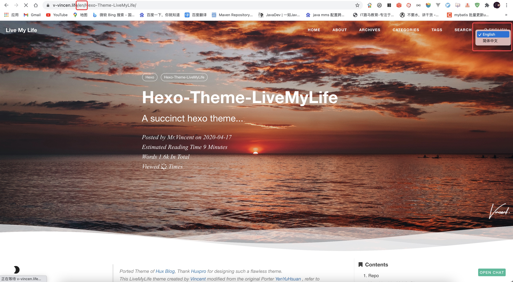
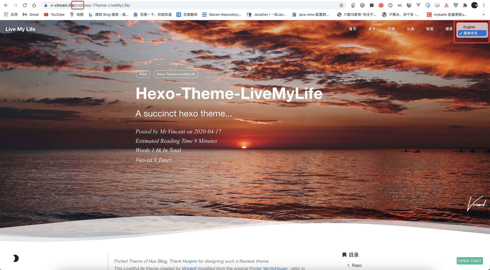

Hexo: You can use internationalization to present your site in different languages. The default language is set by modifying the language setting in _config.yml. You can also set multiple languages and modify the order of default languages.
这是 Hexo 官网对语言国际化（Internationalization（i18n）），最开始的描述。虽说 Hexo 提供了此功能，但是该功能只是简单的帮我们转换网址一些公共部分的内容，以不同的语言来呈现。这样说可能不是很好理解，那博主在这里简单的举个例子。
hexo-theme-livemylife 主题（博主自己写的主题），有小伙伴曾问我，想让主题的菜单显示为中文。当时该主题尚还没能完善此功能，而 Hexo 的语言国际化就能帮我们实现该功能。但是它仅仅只能做到这点，把博客一些公共的部分生成为中文。
但是如果我又想把我写的文章同时生成多个版本的语言，并且能够通过一个按钮，实现多语言之间的跳转，那应该怎么办呢。
这个功能 Hexo 是不支持的，所以博主对 hexo-theme-livemylife 主题进行了升级，在最新的版本中，已支持该功能。那我先来简单的说下我实现该功能的原理。其实就是通过 Hexo 插件 hexo-generator-index-i18n 帮我们去生成不同语言的 :lang/index.html 首页。例如我现在想要一个中英文的首页。那么通过这个插件，它会帮我们生成 cn/index.html 和 en/index.html 两个首页。
但是 source/_post 目录下的文章就做不到生成两个版本的语言了。那如果我想要文章也可以多语言，那怎么办？hexo-theme-livemylife 主题通过在 source/_post 目录下，新建两个文件夹 cn（中文）和 en（英文）来存放不同语言的文章。那么也就是说，如果我想要一篇文章是中英文的，那么我就得事先各写一篇中文版的和一篇英文版的文章，并存放在相对应的文件夹下。
那么 hexo-theme-livemylife 主题多语言的功能具体怎么实现，让我们接着往下看。
概述
Hexo 搭建的网站默认只有一种语言，若想要网站支持多种语言，通过切换语言标签查看不同语言网站。本文以中英文为例进行说明。用到的插件 hexo-generator-index-i18n，官方文档地址：https://github.com/xcatliu/hexo-generator-index-i18n
多语言设置（_config.yml）
1 | # Internationalization (i18n) Setting |
注意： hexo-generator-i18n 插件根据 language 配置来生成不同的语言首页，同时也会生成相应的分页。hexo-theme-livemylife 主题之前的版本生成分页使用的是 hexo-generator-archive 插件，也就是 archive_generator 这个配置。所以如果想要使用多语言功能，切勿忘记配置 index_generator 并关闭 archive_generator 配置。当然 hexo-theme-livemylife 主题，已经将这些配置都配置好了，所以只要保持默认即可。
语言切换开关（_config.yml）
1 | langselect: |
options：语言切换开关按钮选择框展示。
在 source/_post 目录下创建对应语言目录
目录结构如下：
1 | source/ |
注意： 在 hexo-theme-livemylife 主题中，创建的文章名必须一样，因为 langselect: true 配置会根据文章名来，生成语言跳转按钮。也就是说英文版的 hello.md 页面会生成一个跳转按钮，中文版的 hello.md 页面也会生成一个跳转按钮，通过这个按钮可以进行中英文版 hello.md 之间的切换，而这个按钮的跳转路径就是根据相同的文章名来实践的。如果你的文章 other.md 只有一个语言版本的话，那么 other.md 文章生成后的页面中，是不会有语言跳转按钮的。具体案例可以查看 Hexo-Theme-LiveMyLife，语言切换按钮在页面最右上角。如下图：
Preview: en

Preview: cn

自定义语言
在 hexo-theme-livemylife 主题中，暂时只支持 en、cn、tw 这三种语言。有伙伴可能会问如果我想使用别的语言怎么办。那也没问题，hexo-theme-livemylife 主题支持自定义语言。不过你需要自定义 languages 目录下的 .yml 文件。例如，我现在想要添加额外语言为 tw，如下图：
Preview: tw
同时修改配置文件
1 | # Internationalization (i18n) Setting |
这样就完成了语言自定义。
创建文章
如果你开启了多语言功能，那么创建文章的命令有所改动：
1 | hexo n --lang en 'Vincent is so handsome' |
命令执行后的目录结构：
1 | source/ |
多语言功能的效果你可以查看，博主最近更新的 Hexo-Theme-LiveMyLife 博文。
If you like this blog or find it useful for you, you are welcome to comment on it. You are also welcome to share this blog, so that more people can participate in it. If the images used in the blog infringe your copyright, please contact the author to delete them. Thank you !